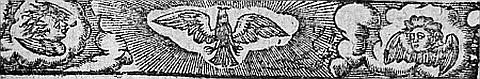
LE
DIXIESME
LIVRE DE LA
SECONDE PARTIE
D'ASTREE.
Édition de 1610, p. 623.
Édition de Vaganay, p. 393.
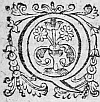
QUANT à Leonide, elle marcha avec plus de diligence depuis qu'elle eust laissé Chrysante au Temple de la bonne Deesse, parce qu'elle desiroit de raconter à son Oncle, ce qui avoit esté faictfait pour Celadon. Et de fortune elle le rencontra sur une terrasse que quelques Sicomores couvroient à l'entree de la maison. Et d'autant qu'il s'estonna qu'elle fut venuë de si bonne heure, elle luy en dit le subjectsubjet , dont il ne pustput s'empescher de rire, voyant comme chacun estoit abusé. - J'ay pensé, continua la NympheNimphe, que c'estoit un bon subjetsujet pour retirer ce miserable Berger, de la vie qu'il faict : car luy faisant cognoistre que sa Bergere l'aime et le regrette, sans doute il prendra resolution de la voir. Mais je ne luy en ay point voulu parler, et m'en
suis venu vous
trouver avant que de le voir, m'asseurantassurant que les
raisons que vous luy direz mieux que je ne sçaurois faire, et l'amitié et respect qu'il vous porte,
seront cause que vos paroles auront un plus grand
poix. - J'en parleray à Celadon, dit le Druyde,
mais je ne sçay si nous obtiendrons cela de luy, car
il est certain qu'il m'ayme et me porte beaucoup de
respect en tout, sinon en ce qui concerne son
affection, et faut que j'advouë que n'eust esté que
je crains qu'en leη
declarant il ne s'en aille en
quelque autre lieu plus escarté et plus sauvage,
il y a long temps que j'en eusse desja parlé à la
Bergere Astree, cognoissant assez qu'elle l'ayme ;
mais la peur que j'ay eu de le perdre entierement,
m'en a empesché. Il y a deux joursη
que nous ne
l'avons veu, aussi bien
est-ilil est à propos que nous y
allionsaillions demain : nous y ferons tout ce que nous
pourrons.
En ceste resolution, dés que le jour commença de
paroistre,
Leonide fut hors du lict et Adamas de mesme : de
sorte qu'estant peu de temps apres habillez, ils se
mirent en chemin. Le matin le Berger n'estoit point
sorti de sa caverne estant demeuré pensif outre
mesure de ce qui luy estoit advenu le jour precedentη
,
tres-aiseayse toutefois et tres-satisfait de la
fortune qui luy avoit permis de voir avant lasa mort
ceste belle Astree. Et considerant que jamais il
n'avoit eu tant de faveur d'elle, qu'en ceste
rencontre, hors-mis lors que jeune enfantη
il la
vid au Temple de Venus, Il Ils s'escrioit : ô heureux malheurη
,
qui as esté plus favoriséη
que ma meilleure
fortune ! O bonté
d'Amour qui parmy ses plus grandes peines donne mesme ses plus grands contentementscontentemens ! Qui voudroit jamais se retirer de ton obeissance, puis que tu as un si grand soinsoing de ceux qui sont à toy ? A ces paroles il adjousta ces vers.
STANCES.
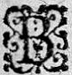
B
elle onde de Lignon que j'enfle de mes pleurs,
Campagnes qui sçavez quelles sont mes douleurs,
Tesmoins de mes ennuis ô Forests solitaires,
Echo de qui la voix respondη à mes accens,
Ayr
Campagnes qui sçavez quelles sont mes douleurs,
Tesmoins de mes ennuis ô Forests solitaires,
Echo de qui la voix respondη à mes accens,
Ayr
Air
remply de souspirs et de cris languissants,
Ayez part à mon heur comme à tant de miseres.
De tempestes tousjours le mont de Marsilly,
Quoy qu'il soit eslevé n'a le dos assailly,
Tousjours impetueux Lignon ne se courrouce,
L'espoir de nos
Ayez part à mon heur comme à tant de miseres.
De tempestes tousjours le mont de Marsilly,
Quoy qu'il soit eslevé n'a le dos assailly,
Tousjours impetueux Lignon ne se courrouce,
L'espoir de nos
mesη
moissons ne nous deçoit tousjours,
Par divers changements s'entresuivent nos jours,
Et d'un bransle divers, le temps mesme se pousse.
Ma Bergereη dormoit : mais autour de ses yeux,
Mille petits Amours voletoient
Par divers changements s'entresuivent nos jours,
Et d'un bransle divers, le temps mesme se pousse.
Ma Bergereη dormoit : mais autour de ses yeux,
Mille petits Amours voletoient
voletoyent
soucieux,
A trouppesη les desirs sur la
A trouppesη les desirs sur la
sa
lèvre jumelle,
Accouroient
Accouroient
Accouroyent
murmurant, comme fantosme
fantosmes
vains,
Et ces desirs naissoient des amoureux Sylvains,
Qui ne virent jamais une Nymphe si belle.
Heureux, ah ! trop heureux tous mes ennuisennuys passez.
Vous estes à ce coup trop bien recompensez,
Et ces desirs naissoient des amoureux Sylvains,
Qui ne virent jamais une Nymphe si belle.
Heureux, ah ! trop heureux tous mes ennuisennuys passez.
Vous estes à ce coup trop bien recompensez,
Puis que je l'ay peu voir avant que je finisse ;
Mais s'il ne te plaist pas de changer son desdain,
Je te supplie Amour fay-moy mourir soudain,
De peur qu'en languissantη
mon heur ne s'amoindrisse.
En sa course Lignon, reflottereflote moins de fois,
Nos champs jaunissent moins, Isoure a moins de bois,
Et moins de voix Echo, bien qu'elle soit sonη
ame,
Moins d'eslans àa cet Air d'un grand vent agité,
Que mon cœur n'a d'Amour, ma NympheNimphe de beauté,
Que mon Amour de foy, que sa beauté de flammeflame
η
.
Cependant que ce Berger s'entretenoit de cettecete sorte, Adamas et Leonide y arriverent : et parce que le visage de Celadon, beaucoup changé de ce qu'il souloit estre, donnoit tesmoignage du contentement qu'il avoit receu, le Druide Druyde et la NympheNimphe le recognoissant luy dirent apres quelques autres propos communs, qu'ils se resjoüyssoientresjoüissoient de luy voir quelque espece de soulagement. - Le plaisir qui se lit en mon visage, respondit Celadon, est comme ces Soleils d'hyverhiver , qui se levent tard et se couchent deà bonne heure, et qui à la verité apportent bien le jour, mais avec de si espaisses nuees que la clartéclairté ny la chaleur ne s'en voit ny ne s'en ressent guereguiere . Et lors il leur raconta la rencontre qu'il avoit euë de Silvandre, la lettre qu'il luy avoit mise entre les mains, et la venuë d'Astree avec toutes ces Bergeres, et comme il l'avoit veuë, et luy avoit mis une lettre dans le seinη . - Mais helas ! mon pere, continua-t'il, encor que cet heur soit tres-grand pour moy, n'ay-je point occasion
de craindre qu'il
ne me soit tenuavenu
η
que pour me faire mieux ressentir
mes desplaisirs ? Et que le Ciel pour me donner plus
de regret du miserable estat où je suis, m'aytait voulu
faire voir celuy, ouoù je devrois estre, s'il y avoit
quelque justiceη
en amour.
η
- Tant s'en faut, mon
enfant, respondit le Druide, que ce sage Amour dont
vous parlez, ayant soin de vous, et desseignant de
vous mettre en une fortune plus heureuse que vous
n'avez point esté, a voulu vous donner ce petit
contentement pour ne vous porter d'une extremité en
l'autre : sçachant assez combien tels changemenschangements sont dangereux. Et
pour vous monstrer que je dis vray, Leonide vous
dira ce qu'elle a aprisappris , et quelle declaration
d'amitié elle a veu faire à la belle Astree :
la NympheNimphe alors luy raconta le vain tombeau qui luy
avoit esté dressé, les ceremonies, les pleurs et les
discours de chacun : et particulierement d'elle : - Et pour vous faire croireη
ce que je dis, adjoustaadjouta la NympheNimphe, venez voir le tombeau de Celadon, il
est si près d'icy, que je ne sçay comment vous n'avez
oüy les voix des filles DruydesDruides et du Vacie.
- Vous me racontez, dit le Berger, des choses que je
n'eusse pas creuëscruës
facilementfacillement de la bouche d'un
autre. - Je ne veux pas, repliqua la NympheNimphe, que vous
m'adjoustiez plus de foy qu'à la plus estrangere du
monde, il me suffit que vous croyez à vos yeux.
A ce mot le DruydeDruide et Leonide le faisant sortir de
ce lieu, le conduirent dans le bois où le vain tombeau luy avoit esté dressé. O Dieu !η
quel devint-il, et comme promptement il se mit àa lire l'escriture que Sylvandre y avoit mise, et l'ayant releuë deux ou trois fois : - J'advoüe, dit-il que vous m'avez dit la verité, Mais ayant receu un si grand contentement, sera ce point faute d'Amour, si j'ay la volonté de vivre, me voyant privé de sa veuë ? Adamas alors prenant la parole : - Il n'y a point de doute, luy dictdit -il, que si vous pouvez demeurer reclus et sans la voir c'est faute de courage et d'Amour. - Ah ! d'Amour non, respondit incontinent le Berger. Je l'advoüeray bien du courage, qui en ceste occasion me deffaut autant que j'ay trop d'abondance d'Amour. - Je croiray, respondit Adamas, que vous n'aymez point Astree, si sçachant qu'elle vous ayme, et la pouvant voir, vous vous tenez esloignéeslongné de sa presence. - Amour, dit le Berger, me deffend de luy desobeyrdesobeïr : Et puis qu'elle m'a commandé de ne me faire point voir à elle, appellez-vous defautdeffaut d'Amour, si j'observe son commandement ? - Quand elle vous l'aà commandé, adjousta le Druyde, elle vous hayssoit. Mais à cette heureà ceste heure elle vous ayme et vous pleure non pas absent mais comme mort. - Comment que ce soit, respondit Celadon, elle me l'a commandé, et comment que ce soit, je luy veux obeyrobeïr . - Et toutesfoistoutefois reprit Adamas, quelque entier observateur, que vous soyez de ses commandemens, si est-ce que vous y avezestes desja contrevenu, puis que vous l'avez veuë, et vous estes presentépresentez devant ses yeux. - Elle ne m'a pas deffendu, dit-il, de la voir, mais seulement de me laisser voir à elle. Et comment
m'auroit-elle veu, puis qu'elle dormoit ? - Si cela est, respondit le DruydeDruide, et comme en effect je trouve que vous avez raison, je vous donneray un moyen de la voir tous les jours, sans qu'elle vous voye. - Je trouve cela bien difficile, respondit Celadon, car il faudroit ou qu'elle dormistdormit , ou que je fusse caché en quelque lieu. - Nullement, repliqua le DruydeDruide, Tant s'en faut vous luy parlerez si vous voulez : - Cela ne se peut adjousta le Berger, si je ne suis en lieu bientbien obscur. - Vous serez, dit Adamas, en plein jour ; voyez seulement (si vous en avez le courage) ou si l'amour a la force de le vous faire entreprendre. - Ne croyez point, mon pere, respondit-il, qu'il y aytait deffaut d'Amour en moy, ny de courage, pourveu que je ne contrevienne point à ses commandemens. - Or, dict le Druyde : oyez donc ce que je viens de penser. Il aà pleu au grand Theutates de m'avoir donné une fille que j'ayme, ainsi que je pense vous avoir dict autresfoisdit autrefoisη η , plus que ma vie propre. Ceste fille, selon la rigueur de nos loix, est entre les filles DruydesDruides nourrie dans les Antres des Carnutes, il y a plus de huict ansη , dont je n'ay nul espoir de la sortir de tant d'annees, que je n'y ose penser, car il faut qu'elle y demeure un siecle, dont la tierce partie n'est point encor escoulee. Peut-estre vous ressouvenezresouvenez-vous bien que je vous ay dictdit , que vous avez beaucoup de ressemblance et d'âge et de visage. Or je me resous de faire courre le bruit, qu'il y a desja quelque temps qu'ellequelle est malade, et qu'à cestecette occasion, les DruydesDruides anciennes ont esté d'advis
que je la retirasse jusques à ce qu'elle soit en estat d'y pouvoir faire les exercices necessaires. Et quelques jours apres vous vous habillerez comme elle, et je vous recevray chez moy, sous le nom de ma fille Alexis, et il sera fort à propos de dire qu'elle est malade : car la vie que vous avez faictefaite depuis plus de deuxη Lunes vous a changé de sorte le visage, et tant osté de la vive couleur que vous souliez avoir, qu'il n'y a celuy qui n'y soit trompé en vous regardant. Et quoy que la ressemblanceη qui est entre vous ne soit pas telle, que quand on vous verroit ensemble, on ne recogneutreconneut bien une grande difference, il n'importe, d'autant qu'il y a si long temps que personne de cette contree ne l'a veuë, que quand vous seriez encor beaucoup moins ressemblansressemblants me l'oyant dire, on ne laissera de vous prendre pour elle. Je ne vois en tout cecy qu'un inconvenient. C'est que tous les ans nous nous assemblons tous à Dreux, qui est si proche des antres des Carnutes, que les Vacies et Druides sçauront aisément que ma fille n'en est point partie : mais il ne faut pas s'arrester pour cela : car comme je vous dis, cestecette assemblee des Druides ne se fait d'une Lune et demy, et sont contraints d'y demeurer plus de deux Lunes, et Dieu sçait si avant ce termeη vous n'aurez prisrepris η vos habits, et changé de vie ! Or regardez Celadon, si cela n'est pas bien faisable ? - Ah ! mon pere, respondit le Berger, apres y avoir songé quelque temps, et comment entendez-vous qu'Astree, par ce moyen, ne me voyevoie point ? - Pensez-vous, adjoustaadjouta le Druide, qu'elle vous voye, si elle ne vous cognoistconnoit ?
Et comment vous cognoistraconnoistra -t'elle ainsi
revestu ? - Mais repliqua Celadon, en quelque sorte
que je sois revestu, si seray-je en effect
Celadon,
de sorte que veritablement je luy desobeyraydesobeïray .
- Que vous ne soyez Celadon, il n'y a point de doute,
respondit Adamas : mais ce n'est pas en cela que vous
contreviendrez à son ordonnance : car elle ne vous a
pas defendudeffendu d'estre Celadon, mais seulementseullement de
luy faire voir ce Celadon. Or elle ne le
verra
pas en vous voyant, mais Alexis. Et par conclusion,
si elle ne vous cognoistconnoit point, vous ne l'offencerez
point, si elle vous cognoistconnoit et qu'elle s'en fasche vous n'en devez esperer rien moins que la mort. Et
telle fin n'est-elle pas meilleure que de languir de
cestecette sorte ? - Voila, dictVoyla dit alors le Berger, la
meilleure raisonη
, et je m'y veux arrester, et
pource, mon pere, je remets entre vos mains, et ma
vie et mon contentement : disposez donc de moy comme
il vous plaira.
Ce fut de ceste sorte qu'Adamas vainquit la premiere
opiniastreté de Celadon : Et afin qu'il ne changeastchangeat d'advis, il s'en retourna dés l'heure mesme pour
donner ordre à ce qui estoit necessaire, et sur tout
pour faire courre le bruit du mal de sa fille, et de
son retour. Car c'estoit la coustume des filles
Druides qu'elles sortoient des Antres, lors qu'elles
estoient malades, et si leurs parens n'estoient soigneuxsongneux
de les envoyer querir, les anciennes les
leur renvoyoient, d'autant qu'elles tenoient pour un
grand mal-heur, lors qu'il yη
en mouroit quelqu'une.
Et cela fut cause qu'il feignoit que la sienne s'en
revenoit par
le commandement des anciennes, et qu'il l'attendoit de jour à autre. CesteCette nouvelle ayant couru quatre ou cinq jours, Adamas et Leonide revindrent avec tout ce qui estoit necessaire vers Celadon, qui cependant avoit eu le loisir de dire Adieu à Lignon, et prendre congé de sesces bois, de son antre, et surtout du temple de la Deesse Astree : Et lors qu'il fut revestu en Nimphe, (c'est ainsi qu'en ceste contree s'habilloient les filles des DruydesDruides, quand elles revenoient de leurs Antres) et qu'il futfust prest à partir, ils furent d'advisavis qu'il falloitfaloit attendre le soir, afin que personne ne le vistvid arriver seul, et cependant Adamas l'instruisoit de ce qu'il avoit à respondre à ceux qui s'enquestoient de la façon de vivre des filles DruydesDruides, de leurs ceremonies, de leur sacrifice, et de leurs escoles et sciences. - Mais en fin, luy disoit-il, le meilleur sera, ce me semble, d'en parler le moins qu'il vous sera possible, et principalement devant ceux qui sçauront quelque chose, car pour les autres il n'importera, d'autant que facilement ils croiront ce que vous leur en direz. Or le jour estant presque finy, ils sortirent de ce lieu, à l'entree duquel Celadon avoit gravé des vers de la pointe d'un poinçon sur le rocher avec beaucoup de peine et de temps, les ayant commencez dés le jour qu'il resolut d'en sortir, pour memoire eternelle du sejour qu'il y avoit fait, ils estoient tels.
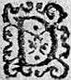
DAns les tristes recoinsrecoings de ceste roche obscure,
Habiterent long temps l'Amour et le desdainη ,
Sans passer plus avant, si tu crains leur blessure,
Passant fuy-t'en soudain.
Car comme le charbon sa flammeflame estant estainteesteinte ,
Retient long temps le chaut,
Aussi craindre il te faut,
Que ces grands Dieux absents de leur demeure sainte
Aient laissé dedans,
Des feux encor ardans.
Ceste affaire fut conduite par Adamas, avec tant de prudence, que Paris mesme n'en sceut rien, ayant resolu de le tromper, afin que les autres y fussent mieux deceus. Il receut donc pour sa sœur ceste feintefainte Alexis, c'est ainsi que d'oresnavant nousη appellerons Celadon : et de fortune lors qu'Adamas arriva chez luy ilη n'y estoit point, qui fut une bonne rencontre, parce qu'il ne vid point qu'elle estoit seule ; d'abord il laη fit mettre au lict, disant qu'elle estoit travaillee du long chemin, et de son mal, de sorte que Paris ne la vitvid que le matin qu'Adamas et Leonide ne la voulurent laisser sortir de la chambre, dont les fenestres estoient si fermees que le peu de clairtéclarté empeschoit de descouvrir ce qu'ils vouloient tenir caché : et continuerent de cestecette façon plusieurs jours, encor que cet artifice fustfut bien
superflu, d'autant qu'elle sçavoit si bien joüer son
personnage qu'il n'y avoit personne qui la peustpeut soupçonner. Toutesfois cela la r'asseura encor
davantage, parce qu'elle receut en cet estat presque
toutes les visites de ses voisines qui s'en alloient
plus satisfaitessatisfaictes d'elle qu'il ne se peut dire.
Quelques jours s'escoulerent de cestecette façon : en fin
elle commença de visiter la maison, et de sortir
dehors, faisant semblant que l'air la fortifoit.
L'assiette du lieuη
estoit tresbelle et agreable,
ayant la veuë de la montagne et de la plainepleine , et
mesme de la delectable riviere de Lignon, depuis Boën jusques à Feurs. Cela avoit esté cause, que
Pelion, pere d'Adamas y avoit fait bastir : Et
depuis Adamas y fit eslever le somptueux tombeau
de son frere Belizar, au sortir de la maison, et
tout aupres d'un petit boccage qui touchoit presque
la maison du costé de la montagne. En ce lieu
Alexis et Leonide se venoient bien souvent promener
à cause de la beauté des alees allees, et de la veuë : et
par ce qu'il falloit un peu monter, Alexis prenoit
quelquefois Leonide sous les bras, quand elles
n'estoient pas veuës, et une fois entre-autres
qu'elles s'estoient levees assez matinη
, et qu'Alexis luy rendoit ce service : - Voicy, dictdit la Nymphe en
sousriant, unen service que vous aymeriezaimeriez bien mieux
rendre à quelque autre qui peut estre ne vous en
sçauroit pas tant de gré que moy. - Ha ! Nymphe, dit Alexis en souspirant, je vous soupplie au nom de
Dieu ne renouveller point le souvenir de mon mal : penseriez-vous que je peusse
oublier, le ressentant
d'ordinaire comme je fay ? Elles parvindrent avec ces propos au boccage, qui
estant plus relevé que la maison descouvroit encores
mieux toute la plaine, de sorte qu'il n'y avoit
reply ny destour de Lignon, depuis Boën d'où il
commençoit de sortir de la montagnemontaigne , jusques à
Feurs, où il entroit en Loire, qu'elles ne
descouvrissent aisément. CesteCette
representation fut si
sensible à la feinte Alexis, qu'elle ne peutpeust s'empescher de dire tout haut :
η
- Ha ! mes tristes
yeuxη
comment souffrez-vous sans mort la veuë de ces
rives heureuses, où vous laissastes par mon départdespart tout vostre contentement. Leonide qui vouloit
l'interrompre : - Je croy, luy dit-elle, que de tous
ceux qui aymentaiment , vous estes seule qui vous ennuyez de voir les lieux
où vous avez receu du plaisir : car si le souvenir
des travaux passez est agreableaggreable à la pensee, à plus
forte raison le sera celuy du bonheur receu. La
triste Alexis luy respondit : - Ce qui rend douce la
memoire du mal passé, c'est cecelle qui rend celleη
du
bien pleine d'insupportables amertumes, par ce que
la cognoissance d'avoir passé ce mal resjoüitresjouyr ,
et
celleη
de n'avoir plus ce bien attriste : mais
encore ay-je une surcharge à mes ennuis, qui n'est pas petite, qui est de ne sçavoir l'occasion de mon
mal. C'est je vous jure Leonide
η
, une des plus
cruelles pointespoinctes qui me traverse le cœur en ceste
affliction. J'ay fait une exacte recherche de ma vie,
mais je n'en ay peu condamner une seule action : de
penser qu'une humeur volage ou quelque autre dessein
luy ait donné volonté de changer d'amitié, c'est la
trop offencer :
et desmentirdementir trop de tesmoignages que j'ay du contraire : de croire aussi qu'elle me traitte ainsi sans quelque raisonη , c'est avoir peu de cognoissance d'elle, de qui les moindres actions n'en sont jamais despourveuës : qu'est-ce donc que nous accuserons de nostre mal ? O Dieux ! je pense que la langue ne pouvant bien expliquer le mal, duquel les sentimens ne peuvent assez bien comprendre la grandeur, vous ne voulez pas que l'entendement le cognoisse ! Et lors continuant ses tristes pensees : - Voyez-vous, dit-elle, grande NimpheNymphe une petite Isle que Lignon faict au droict de ce hameau, qui est de là la riviere, un peu plus en là que Mont-verdun, et un peu par dessus Julieu. Nous y estions passez par dessus des grosses pierres que nous avions jettees en l'eau de pas en pas, parce qu'en ce temps-là nous cherchions les lieux les plus cachez pour éviteresviter la veuë de nos parens, et mesme de mon pere, qui ne trouvant remede à cestecette affection qu'il voyoit croistre devant ses yeux, resolut de me faire sortir de la Gaule, et me faire passer les Alpes, et visiter la grande citéη , pensant que l'esloignement pourroit obtenir sur moy ce que ses deffences et contrarietez n'avoient jamais peu : Et par ce que nous en estions bien advertis, nous allions cherchant, comme j'ay ditdict , les endroitsendroicts les plus reculez, pour au moins employer le peu de temps qui nous restoit à nous entretenir sans contraintecontraincte . Quelquefois à cause de la commodité du lieu, nous venions dans ce rocher que vous voyez beaucoup plus pres de nous, qui est creux, et
laissions Lycidas ou Philis en sentinelle pour nous advertir quand
quelqu'un passoit, parce qu'estant prez du grand
chemin nous avions peur d'estre oüisouys .
Or cestecette fois comme je vous dy suivant nos brebis
qui s'estoient comme de coustumes ramassees ensemble,
nous passames sur des gros cailloux en cestecette petite
Isle de Lignon : Et quoy que nous eussions desja
diverses fois pris congé l'un de l'autre, afin de
n'estre point surprisη
, car mon pere me tenoit caché
le jour de mon despart, si ne laissames-nous de
renouveller encor nos Adieux. D'abord que nous
vismes que nous ne pouvions estre apperceusaperceus de
personne, elle s'assit en terre, et s'appuya contre
un arbre, et moy me jettant à genoux je luy pris la
main, et apres l'avoir baisee et moüillee de mes
larmes quelque temps, en fin lors que je peus parler,
je luy dis.
- Doncques mon bel Astre, il faut que
je vous esloigneeslongne, et que je ne meure pas, puis que
vous me l'avez commandé ? Mais comment le pourray-je,
si la pensee de cestcet esloignement m'est tant
insupportable qu'elle m'oste presque la vie, toutes
les fois que je me souviens qu'il vous faut laisser ?
Elle ne me respondit rien, mais me jetta un bras au
col et me fit coucher en son girongyron, exprezexpres , comme
je croy, pour m'oster la veuë des larmes
qu'incontinent apres elle ne peut retenir : Et parce que j'attendois qu'elle me distdit quelque
chose, je demeuray quelque temps muet ; elle
cependant, me flattoitflatoit les yeux et les cheveux avec
la main, et me sembloit bien d'oüirouyr
quelques souspirs
qui estant contraincts n'osoient sortir avec violence
pour ne se faire ouyr. Ayant en ce silence quelque
temps repensé en mon mal, en fin je parlay à elle
de ceste sorte : - Helas ! Mon Astre ne pleignez-vous
point ce miserable Berger que la cruauté d'un pere,
et la rigueur du destin chasse d'aupres de vous ?
Elle me respondit avec un grand souspir : - Est-il
possible, mon fils que vous ayez memoire de ma vie
passee, et que vous entriez en doutedoubte que je ne
ressente vivement tout ce qui vous desplaistdesplait ? Croyez,
Celadon, que je vous rendray tesmoignage que je vous
aymeaime , et Dieu vueille que ce ne soit trop
clairement. Je me relevay pour voir quelle estoit cestecette preuve
qu'elle me vouloit donner de son amitié : mais elle
tourna la teste de l'autre costé, et me remit avec
la main au mesme lieu où j'estois auparavant, afin
que je ne visse ses larmes, dont il sembloit que son
honneur eust honte : - C'estoit peut-estre, dit
Leonide, son courage
glorieux, qui ne vouloit
qu'autre qu'Amour
sceustsceut que l'Amour l'eusteut surmontee.
η
- Quoy que ce fustfut , dit Alexis, elle ne voulut que
je visse ce que l'amour la contraignoit de faire
pour moy. - Pourquoy, luy dis-je, mon bel Astre, si
mon esloignement vous
faschefache , ne me commandez-vous que je demeure ?
croyez-vous qu'il y ait commandement de pere, ny
contrainte de la necessité, qui ne face contrevenir
à ce que vous m'ordonnerez ? - Mon fils, me dit-elle
alors, j'aymeroisaimerois mieux la mort que
vous destourner de vostre voyage : vous offenceriez
trop contre
vostre devoir, et moy contre mon honneur.
Et ne pensez pas que je fasseface doute du pouvoir
absoluabsolut que j'ay sur vous : je vous juge par
moy-mesme qui sçay bien n'y avoir puissance de pere,
authorité de mere, volonté de parens, conseil ny
sollicitation d'amis qui me puisse jamais faire
contrevenir à l'amitié que je vous porte. Et afin que
vous partiez avec quelque contentement d'aupres de
moy, emportez ceste asseurance avec vous. Je vous
jure et promets en presence de tous les Dieux que
j'appelle à tesmoins, et par cestecette ame qui vous aymeaime tant dit-elle, mettant la main sur son estomac, qu'il
n'y a, mon fils, ny ordonnance du ciel,
ny contraintecontraincte de la terre, qui me face jamais aymeraimer autre que Celadon, ny qui me puisse empescher que je ne l'aymeaime tousjours. - O parolesparolles ! ditdict alors en souspirant
Alexis : ô parolesparolles
ditesdictes trop favorablement à celuy
qui depuis devoit estre tant défavorisé !
Quelques jours apres je partis, et passant par les
Allobroges, je ne sçaurois vous dire combien je
courus de fortune
par les rochers et precipices
affreux des Sebusiens, des Caturiges, des Bramovices et Carroceles, et jusques aux Segusienses, où je
parachevay les Alpes Coties : car autant de pas que
l'on faict, autant voit-on de fois l'horreur de la
mort ; et toutesfois cela n'estoit point capable de
distraire ma pensee. En passant sous ces effroyables rochers que l'on ne
peut regarder qu'en haussant la teste de propos
delibéré, et tenant son chappeau, de peur qu'il ne
tombetumbe , je fis ces vers.
STANCES.
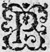
PRecipices, rochers, montagnes sourcilleuses,
AbismesAbysmes entre-ouverts, vous pointes orgueilleuses,
Qui vous armez d'horreur et d'espouventement,
Encor que de pitié vous ne soyez atteintes,
De vos sommets chenus escoutez mes complaintes,
Et soyez pour ce coup tesmoins de mon serment.
Ainsi que j'apperçois dessus vos testes nuës,
Les arbres se nourrir, et voisiner les nuës,
Je fay vœu qu'à jamais en moy je nourriray
Contre tous mes malheurs mon amour infinie :
Accroisse s'il se peut le Ciel sa tyrannie,
Si je n'esmeus l'Amour, la mort je fleschiray.
Et parce qu'auparavant ayant passé les destroits des Sebusiens, je voulus éviter la fascheusefacheuse montagne des Caturiges me mettant sur le Rosne, je me resolus de suivre ce grand lac qui flotte contre les rochers escarpez de cestecette montagne, mais je ne fus pas soulagé par l'eau davantage que par la terre : au contraire la tourmente s'eslevant, nous faillismesfaillimes plusieurs-fois de nous perdre tous. Et lors que chacun pour la prochaine mort qui nous menassoitmenaçoit , trembloit dans le batteaubateau , sans estre esmeu de cestecette crainte, je ne pensois qu'en ma Bergere, et voicy des vers que j'en fis à l'heure mesme.
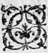
ONdes qui souslevez vos voutesη vagabondes,
Contre le foible sein de mon fresle vaisseau,
Sçachez que dans le sein je porte un tel flambeau,
Qu'il peut rendre une mer des abismes sans ondesη .
Plusieurs fois de mes yeux les deux sourcesη fecondes
Auroient desja fait naistre un Ocean nouveau,
Si l'ardeur de ce feu ne consommoit leur eau,
Vagues refuyez donc en vos grottes profondes.
De vos replis bossusη plus fort vous nous hurtez,
Sans craindre de l'Amour les flambeaux redoutez ?
N'estes-vous point d'enfer quelque source maudite ?
O Dieux ! S'il est ainsi du destin estably,
Sontη plustost qu'un Lethé, pour le moins un Cocyte,
Fleuve plustost de mort, que fleuve de l'oubly.
Au sortir de ce grand lac, je traversay les grands bois des Caturiges, et apres avoir passé Iseré, riviere qui vient des Centrons, je traversay l'estroitte valleeestroite valee des Carroceles, et Bramovices, qui me conduit jusques aux monts Coties. Je fis en passant par ces grands rochers, et ces desersdeserts, des vers que j'ay oubliez : mais un estrangerη en la compagnie duquel je m'estois mis, en fit qu'il me recita, et parce qu'ils me pleurent, je les appris par cœur, ils estoient tels.
SONNET.
Des Montagnes et Rochers à un Amant.
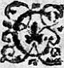
CEs vieux Rochers tous nuds, glissants en precipice,
Ces cheutes ende Torrent, froissez de mille saults,
Ces sommets plus neigeux, et ces motsses monts η les plus hauts,
Ne sont que les
pourtraictspourtraits de mon cruel supplice.
Si ces Rochers sont vieux, il faut que je vieillisse
Lié par la constance au milieu de mes maux :
S'ils sont nuds et sans fruictfruit , sans fruictfruit sont mes travaux,
Sans qu'en eux nul espoir je retienne ou nourrisse.
Et ces TorrentsTorrens rompus, sont ce pas mes desseins ?
Ces Neiges vos froideurs, ces grands Monts vos desdains ?
Bref ces deserts en tout à mon estre respondentη .
Sinon que vos rigueurs plus malheureux me font :
Car d'un chaudd'en-haut η bien souvent quelques neiges se fondent,
Mais las ! de vos froideurs, pas une ne se fond.
Leonide qui estoit bien aise de distraire Alexis de ses fascheuses pensees : - Racontez moy, luy dit-elle, ce que vous vistes de rare, en vostre voyage. - Cela seroit trop long, respondit-elle, car l'Italie est la province la plus belle du monde : et mesme quand j'eus descendu les Monts Coties, et que j'eus passé la ville desη Segusienses. Mais je vous veux raconter l'une des plus
belles adventuresadvantures qui m'y advindrent, m'asseurant que nous en aurons assez de loisir.
HISTOIRE
D'URSACE ET D'OLYMBRE.
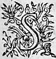
SCACHEZ donc Madame, qu'Alcippe ayant fait dessein de m'esloignereslongner d'Astree, il m'ordonna de laisser les habits des Bergers, afin que plus librement je peusse frequenter parmy les bonnes compagnies : Car en ces payspaïs dont je vous parle, il n'y a que les personnes plus viles qui demeurent aux champs, et les autres habitent dans les grandes villes, qu'ils nomment CiteuCitez η , où les Palais de marbre et les enrichissures qui surpassent l'imagination estonnent plustost ceux qui les regardent, qu'ils ne peuvent estre assez considerez : Encores certes que chacun y fustfut encor effrayé de la venuëη d'un barbareη qui par mer estoit descendu en Italie, et l'avoit presque toute ravagee, et Rome particulierement. J'avois tant de desir de me rendre aimableaymable , que je ne vous sçaurois dire avec quelle curiosité, je voulois apprendreaprendre toute chose, esperant qu'Astree m'en aimeroitaymeroit mieux : Approchant donc de l'Appennin, je sceus qu'il y avoit des Montagnesη qui brusloient continuellement, afin d'en sçavoir parler à mon retour : je voulus les voir, et cela fut cause que me destournant un peu du grand chemin, je prisprins
à main droictedroitte . Mais je fis une rencontre qui rompit mon dessein comme je vous diray. Je n'avois pas encor monté plus de deux mille, c'est ainsi qu'ils content la distance des lieuës, que j'oüisouys une voix qui se plaignoit : et parce que j'eus opinion que ce seroit peut-estre quelqu'un qui auroit faute d'assistance, je tournay du costé où mon oreille me guidoit. Je n'eus pas marché cent pas que je vis un homme estendu de son long contre terre, qui sans m'appercevoir à l'heure que j'arrivay parloit de ceste sorte.
SONNET.
S'il doit mourir ou vivre.

MOn esprit combatu diversement chancelle,
Dois-je vivre ou mourir parmy tant de malheurs ?
Si je vis, he comment souffrir tant de douleurs ?
Si je meurs, he comment estre à jamais sans elle ?
En mourant je n'auray que l'espine cruelle,
Dont Amour si souvent m'a tant promis de fleurs ;
En vivant je seray tousjours noyé des pleurs,
Que mon cuisant regret sans cesse renouvelle.
Pour tromper tant de maux, mon cœur que ferons-nous ?
Vivons. La vie enfin est agreable à tous,
Mourons. Douce est la mort dont l'ame est soulagee.
En quel cruel estat m'ont reduit mes ennuis,
Puisque ny vif ny mort, la misere où je suis,
Tant mon desastre est grand, ne peut estre allegee !
Miserable Ursace, disoit-il, apres s'estre teu quelque temps, jusques à quand te trompera ce vain espoir qui te flate ? combien te fera t'il passer encores de jours en ceste cruelle misere ? Et combien te contraindra t'il de conserver ceste vie tant indigne et de tes actions et de ton courage ? Toy qui as eu le cœur si pleinplain d'outrecuidance que d'avoir levé les yeux à l'espouseη d'un Cesar, qui as eu le courage pour la venger et ton amour aussi, de tremper tes mains dans le sang d'un autre en autre η , en auras-tu maintenant si peu que tu puisses vivre, et voir ta chere Eudoxe entre les mains d'un Vandale qui l'emmene dans le profond de l'Afrique, et pour triomphertriomphe et pour saouler, peut estre son impudicité ? O Dieu ! comment souffrirez-vous que ceste beauté qui veritablement ne doit estre sinon adoree, soit indignement la despoüille d'un si cruel barbare ? Si l'oudrecuidance de l'Empire Romain vous a despleu : si les vices de la miserable Italie vous ont offenséoffencé : je ne trouve pas estrange, que vous l'ayez mise en proye aux Huns et aux Vandales, et que Rome mesme riche des despoüilles de toutes sortes de gens, soit maintenant saccagée par toute sorte de gens ? car il est bien raisonnable qu'elle leur rende avec usure ce qu'elle leur a ravy. Mais ô Dieux comment souffrez-vous que ceste beauté qui estoit divine, coure maintenant la fortune des plus miserables choses humaines ? Et tu le sçais Ursace, et tu l'as veu devant tes yeux, et tu n'es pas mort. Et tu te vantes encores d'estre ce mesme
Ursace Romain qui a esté
aymé de ceste divine Eudoxe, et qui as vangé et delivré l'Empire et ceste
belle de la Tyrannie de Maxime ? ah meurs ! meurs si tu
veux que le nomη
t'en demeure avec raison, et ce que
le regret n'a peu faire
que ce fer le fasse maintenant, pour laver par cest
acte signalé, la honte d'avoir survescu la liberté
d'Eudoxe.
Cest estranger parloit de ceste sorte : et prenant tout transporté de fureur un petit glaive qui luy
pendoit à costé de la cuisse, il s'en fut donné sans
doute dans l'estomach, si un sien compagnon accourant
à temps ne luy eust retenu le bras qu'il avoit eslevé
pour donner un plus grand coup. Mais il advint qu'en
luy sauvant la vie il faillit d'avoir la main coupee.
Car Ursace se sentant pris, et ayant desja l'esprit
occupé de l'opinion de la mort, il le retira si
promptement, que sa mancheη
luy eschappaeschapa , et la main de
celuy qui estoit survenu, coulant tout le long, le
tranchant luy fit une grande blesseure, qui fut cause
que ne leη
pouvant plus retenir de ceste main, et
craignant qu'il ne parachevast son cruel dessein,
il se jetta sur luy, luy disant : - Jamais Ursace ne
mourra sans Olymbre. Grand effect de l'amitié ; à ce nom d'Olymbre, je
vis cet homme auparavant si transporté revenir tout
à coup en luy-mesme, et comme s'il fut tombé de
quelque lieu bien haut, il sembloit tout estonné de
ce qui luy estoit advenu, et de ce qu'il voyoit : en fin lors qu'il pût prendrepeut reprendre la parole : - Amy,
dit-il, hé quel demon contraire à mes desirs t'a
conduit en ce lieu escarté pour m'empescher de
suivre, si je ne
puis comme Ursace, comme son esprit, pour le moins sa tant aimeeaymee Eudoxe ? - Ursace luy dit-il, le Dieu qui preside aux amitiez, et non point un mauvais demon, est cause que je te cherche depuis trois jours, non pour t'empescher de suivre Eudoxe, si c'est ton contentement, mais pour t'y accompagner, ne voulant souffrir que si ton Amourη te fait faire ce cruel voyage, mon amitié ayt moins de pouvoir à me faire te η tenir compagnie. Et par ainsi si tu veux achever le dessein que tu dis, il faut que tu facesfasses resolution de mettre premierement ce fer que tu tiens en la main, dans l'estomac de ton amy, et puis rouge et fumeux de mon sang, tu pourras executer en toy ce que tu voudras. - Ah ! Olymbre, dit-il, que tu me faits une requeste dont l'effecteffet est incompatible avec mon amitié : penses-tu que ma main put avoir la force d'offencer l'estomac de l'amy d'Ursace ? me tiens-tu pour si cruel que je pusse consentir à la mort de celuy de qui la vie m'a tousjours esté plus chere que la mienne propre ; Oste, oste cela de ton esprit : jamais ceste volonté ne sera en ceste ame qui t'a aymé, et qui ne cessera jamais de t'aymeraimer . Mais si tu as quelque compassion de ma peine, par nostre ancienne et pure amitié, je te conjure amy de me laisser sortir de ceste misere où je suis. - Est-il possible respondit incontinent Olymbre, que mon amitié estant si parfaicteparfaite envers toy, je recognoisse la tienne si deffaillante ? Tu n'as pas eu le courage de m'oster la vie, afin que je te puisse suivre, et tu as bien la volonté de te ravir de moy, afin que tu puisses suivre Eudoxe ? Crois-tu la mort estre bien ou mal ? Si c'est mal pourquoy
veux-tu le donner à ce que tu sçais bien que Olymbre ton amy ayme plus que luy-mesme ? Si c'est bien pourquoy ne veux-tu qu'Olymbre que tu aymes participe à ce bien avec toy ? - Pour toutesA toutes ces raisons respondit Ursace, je ne te puis dire autre chose, sinon qu'Olymbre vivra eternellement, s'il ne meurt que de la main d'Ursace, et que tu me rendras uneun extreme preuve d'amitié, de me laisser librement parachever ce dessein qui seul peut effacer la honte d'avoir survescu à mon bon-heur. Et en disant ces paroles il essayoit de retirer le bras que son amy luyle tenoit engagé sous le corps : de quoy m'apercevant, et craignant que celuy qui estoit blessé n'eust pas assez de force pour l'en empescher, je m'approchay doucement d'eux, et prenant la main d'Ursace, je luy ouvris les doigts à force, et me saisis du glaive. Et parce que l'effort qu'Olymbre faisoit luy avoit fait perdre beaucoup de sang par la blesseure de la main incontinent apres se sentit deffaillir, et prenant garde que c'estoit à cause de la perte du sang, il se leva de dessus son compagnon et luy monstrant sa main : - Amy, luy dit-il, tu as faict ce que je desirois, voilavoyla je m'en vay t'attendre aupres d'Eudoxe, bien-heureux de ne te pas suivresurvivre η , puis que tu voulois mourir : Et presque en mesme temps se laissant couler en terre il s'esvanoüit sur le sein de son amy. Ursace pressé de la crainte d'une telle perte, laissa l'opinion qu'il avoit de se tuer pour le secourir, et courant à une fontaine qui estoit prés de là en apporta de l'eau sur son chappeauchapeau
pour luy jetter au visage. Cependant parce que je cognus bien que le mal procedoit de la perte qu'il faisoit de son sang, je luy liay la playe avec un mouchoir y mettant un peu de mousseη , ne pouvant promptement y trouver autre remede : Et je n'avois encore achevé qu'Ursace revint, qui arrousant le visage de son amy d'eau froide, et l'appellant à haute voix, par son nom, le fit en fin revenir. A l'ouverture de ses yeux, - Helas ! dit-il, amy, pourquoy me rappelles-tu ? laisse partirparti mon ame bien contente, et permets qu'elle t'attende où tu veux aller, et aye ceste creance d'elle je te supplie, qu'elle ne pouvoit cloreclorre ses jours plus heureusement que par ta main, et en te faisant service. - Olymbre, dit Ursace, s'il faut que tu partes pour venir avec moy, il faut que je sois le premier : et pource ne pense point que mon amitié permettepermettre que le passage soit ouvert à ton ame par ma main, qu'elle-mesme et avec le mesme fer n'ayt chassé la mienne hors de son miserable sejour. Et à ce mot, il cherchoit de l'œil où estoit l'arme que je luy avois ostee, dont me prenant garde : - Ne pense, luy dis-je, Ursace, de pouvoir satisfaire avec ce fer à ta cruelle deliberation : le Ciel m'a envoyé icy pour te dire, qu'il n'y a rien au monde de si desesperé qu'il ne puisse remettre en son premier estat, lors qu'il luy plaira, et pour te deffendre de ne pointη attenter sur la vie, ny de toy ny de ton amy, car c'est à luyη à qui elle est et non point à nousvous . Que si tu fais autrement je t'annonce de la part du grand Dieu, qu'au
lieu de suivre cestecest Eudoxe que tu desires avec tant de passion, il te releguera dans des obscures tenebres, où Tant s'en faut que tu ayes jamais ceste veuë tant souhaittee, qu'au contraire il ne t'en laissera pas la memoire seulement. Je vous raconteray Nimphe, dit Alexis, un estrange effect. Olymbre oyant mes paroles surpris de ravissement se voulut lever pour se mettre à genoux devant moy : Mais la foiblesse l'en empescha, et seulement meη joignit les mains, se tournant de mon costé. Mais Ursace se prosternanttournant à mes pieds : - O messager du Ciel, me dit il, que je recognois soit aux discours soit à l'esclat du visage, me voicy prest, qu'est-ce que tu commandes ? - Ils vous prindrent, interrompit Leonide pour Mercure, parce qu'ils le representent jeune et beau comme vous estes. - Il est vray respondit Alexis, qu'ils me penserent estre Mercure ou quelque messager celeste : Mais je ne sçay pourquoy, tant y a que pour me prevaloir à leur profit de ceste opinion, je fis telle responce à Ursace : - Dieu ô Ursace te commande, et à toy aussi Olymbre, de vivre et d'esperer. Et à ce mot sortant de ma poche un petit cuirη pleinplain de vin, à la façon des Visigots j'en fis boire un peu à Olymbre : et luy donnant la main je luy dis : - Debout Olymbre, le Ciel te guerira bien tost de ceste blesseure, et pour cestcet effect, allons en ceste bourgade prochaine, car il veut que les graces qu'il fait soient le plus souvent par l'entremise des hommes, afin d'entretenir l'amitié entr'entre eux par ces mutuelles obligations. Ce fut une chose estrange que l'effecteffet de l'opinion
en cet homme, puis que pensant que je fussefeusse envoyé
du Ciel, et que le breuvage que je luy avois donné,
fut quelque chose de divin, le voila qui reprit
ses forces, et se mit à me suivre, tout ainsi presque
que s'il n'eust point eu aucun
de mal. Craignant
toutesfois que quelque deffaillance ne luy revint
je me tournay vers Ursace, et luy dis : - Encor
que le Ciel puisse donner telle force à vostre amy,
qui luy sera necessaire, si n'est-il point hors de
propos, que vous luy aydiez à marcher. Car Dieu se
plaist, d'autant qu'il est bon, de voir les effects de la bonté entre les hommes. A ce mot Ursace s'approchant de son amy le pria de s'appuyer sur luy : De ceste sorte nous arrivames à la prochaine bourgade, où de fortune nous trouvasmes un Mire qu'ils
nomment Chirurgien, qui pansapensa la main d'Olymbre : et
parce qu'il n'y avoit rien de dangereux que la perte
du sang, il luy ordonna de tenir le lict pour quelque
temps.
Quantη
à moy, je me retiray en un autre logis, estant
bien aise de leur avoir rendu ce bon office : encores
que cela fustfut cause que mon dessein demeura imparfaict,
car le jour estoit tant advancé qu'il n'y avoit pas
du temps pour aller voir ces Montagnesη
bruslantes.
Ursace fut bien empesché quand il me vitvid partir,
parce qu'il me vouloit accompagner : et toutesfois
son amitié luy deffendoit d'eslongner son amy en cest
estat. Je recognus aysément sa peine, et pour l'en
oster je luy dis qu'il devoit demeurer aupres de
son amy, et que Dieu luy sçauroit gré de l'assistance
qu'il luy rendroit. Si je ne l'en
eusse empesché, je croy qu'il se fut jetté à mes pieds pour remercimentremerciement : mais ne voulant le souffrir, je le η luy deffendis, et incontinent je me retiray en un autre logis. Mais Ursace m'ayant suivy de loing, remarqua le lieu où j'estois entré, et ayant sceu que j'avois demandé à loger, s'en retourna vers son amy pour l'advertir, qu'encores que je fusse sorty de leur logis, toutesfois je ne m'en estois pas allé, esperant par ce moyen que je lesle reverrois encores. Car grande Nimphe, ils avoient pris une si grande confiance en moy, qu'ils s'asseuroient avec mon assistance de r'avoirt'avoir bien tost Eudoxe : Mais trouvant qu'ilη s'estoit endormy, il revint incontinent où j'estois, et voyant que je prenois mon repas, il demeura un peu estonné. Si n'en fit il point de semblant, tant qu'il vid quelques personnes du logis autour de moy : mais quand la nape fut ostee, et que nous demeurames seuls, je luy dis qu'il serrast la porte de la chambre sur nous : Et puis le faisant asseoir, quoy qu'avec beaucoup de peine, pour le mettre hors d'erreur, je luy parlay de ceste sorte : - Je voy bien seigneur Chevalier, que l'assistance que vous avez euë de moy tant à propos, vous a faict croire que j'estois quelque chose plus qu'homme, et n'ay point esté marry que vous ayez eu ceste creance, afin de vous destourner du cruel et furieux dessein que vous aviez. Mais à ceste heureà cette heure que la raison a repris sa premiere force en vous, je ne veux pas que vous demeuriez plus long temps deceu. Sçachez donc que je suis Celte que vous appellezη
Gaulois, et né dans une contree, dont les habitans sont nommez Segusiens et Foresiens. Quelques occasions qui seroient longues et inutiles à vous desduire m'ont fait sortir de ma patrie, et me contraignent de demeurer en ceste Italie, pour quelque temps. Toutesfois je tiens pour certain que ce ne fust point sans une particuliere providenceη du Ciel, que je fus conduit si à propos au lieu où vous estiez, puis qu'il s'en est ensuivy un si bon effect. Je l'en remercie de tout mon cœur, et me semble que vous en devez faire de mesme, puis que vous devez estre tres-asseuré, qu'il ne vous eust point retiré de ceste prochaine mort, si ce n'eust esté pour faire de vous quelque chose, ouoù à sa gloire, ou à vostre honneur et contentement. Je vy à ces paroles qu'Ursace devint pasle, et changea deux ou trois fois de couleur, se voyant deceu de l'assistance divine qu'il avoit esperee : toutesfois comme homme de courage, apres y avoir pensé quelque temps : - J'advouë me dit-il, que j'ay esté deceu, car vous voyant en quelque sorte vestu d'autre façon, que nous ne sommes, le visage si beau, oyant vostre voix plus douce, et vostre parole si grave, et de plus estant arrivé presque invisiblement, et si à propos pres de nous, il faut que j'advouëavouë que je vous prins pour l'un des Messagers du grand Dieu, mais puis que j'entends par vostre bouche mesme que vous estes mortel comme nous, je ne veux pas laisser de croire pour cela, que vous ne soyez envoyé de luy pour luy conserver la vie de deux fidelles serviteurs. Et quoy que par
la premiere opinion que
j'avois euë de vous, je me fussefeusse incontinent figuré
des assistances extraordinaires du Ciel, je n'en
veux pas pour cela perdre l'esperance entierement,
puis que par la rencontre que nous avons faictefaite de
vous, il est impossible de nier que ce soit un soinsoing particulier, que quelque grand Dieu, ou grand demon, pour le moins a
de la conservation de nostre vie.
- N'en doutez-point, luy dis-je, ny que vous ne
soyez reservez à quelque meilleure fortune, puisqu'ilsη
vous ont retirez d'un danger si apparent : car
ils ne font jamais rien que pour nostre mieux : Et
parce que je suis estranger, et du tout ignorant de
la fortune que vous regrettez, ce me seroit un grand
plaisir de l'oüyr de vostre bouche à fin que je
sçeusse pour le moins, pour qui les Dieux m'ont
faict vivre ceste journee. Alors avec un grand souspir,
il me respondit de ceste sorte : - Le Ciel me puniroit
avec raison, comme un ingrat, si je refusois àa celuy
qui m'a conservé la vie, de luy raconter quel en a
esté le cours et l'entresuitte. Et pour ce je satisferay à vostre curiosité, avec promesse
toutesfois que vous tiendrez secret ce que je vous en
diray, car estant descouvert, il pourroit estre cause
de la perte de ceste vie, que nous pouvons dire que
vous nous avez conservéconservee .
Et luy en ayant donné toute
l'asseurance qu'il voulut, il continua de ceste sorte.
Alexis vouloit continuer son discours, et raconter
tout au long ce qu'Ursace luy avoit dit. Mais Adamas survenant l'en empescha. Car Leonide et elle
furent contraintes de se lever,
et luy rendre l'honneur qu'elles luy devoient, et le sage DruideDruyde, les prenant chacune d'une main commença de se promener par une allee qui, encores que couvertecouvertes du Soleil ne laissoit d'avoir une belle veuë du costé du bois d'Isoure : Et cependant qu'ils discouroyentdiscouroient de diverses choses, on les vint advertir que Silvie estoit arrivée, et qu'elle estoit desja entree dans la maison. Alexis fit difficultéη de se laisser voir à elle, de peur d'estre recognuë : Mais en fin se ressouvenant combien ceste Nymphe avoit desja contribuéη du sien, pour le sortir de la peine où il estoit au Palais d'Isoure, elle creut qu'elle ne seroit pas changee. Toutesfois Adamas ne fut pas d'advis qu'elle se laissast voir, craignant que la jeunesse de la Nymphe, et les faveurs qu'il avoit sceu que Galathee luy faisoit, depuis que sa Niepce n'estoit plus aupres d'elle, ne la fissent parler plus qu'elle ne devroitdebvroit . Et il vouloit de sorte tenir cestecest affaire secrette, que s'il eust pû, il se la fut cachee à luy-mesme. Il commande donc à Leonide d'aller trouver sa compagne, et sur tout ne luy parler de Celadon : que si elle demandoit de voir Alexis, qu'elle luy dit, qu'ils estoient empeschez ensemble, pour quelques affaires de leurs charges, et offices : et qu'estant resoluë de retourner bien-tost vers les Carnutes, et parachever son terme, elle ne se laissoit voir que le moins qu'elle pouvoit. Leonide s'en alla donc de ceste sorte bien instruiteinstruitte trouver Silvie, à laquelle elle donna d'abord tant de baisers, et fit tant d'embrassements qu'il sembloit qu'elles ne se fussent veuës deη
plus d'un an : et apres ces premiers accueils, et que pour se gratifier l'une l'autre, elles se furent asseurees qu'elles ne s'estoient jamais veuës si bellesη , et que Silvie eust dit à sa compagne, que les champs ne luy avoient point gasté son beau teint, et que Leonide luy eust reproché, qu'elle ne monstroit pas d'avoir beaucoup de regret de ne la voir plus, et que le tracas de la Court ne la travailloit guiere, puis qu'elle avoit un meilleur visage, encores que quand elle la laissa, elles s'assirent esloigneeseslongnees de chacun, et lors Silvie luy parla de ceste sorte.
SUITTEη
DE
L'HISTOIRE
DE LINDAMOR.
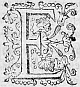
ENCORES ma sœur, qu'il ne me faille point de subjet pour me convier de vous venir voir, sinon le seul desir que j'en ay, si vous diray-je qu'à ce coup ce qui m'a conduict icy, n'est pas cestecette seule volonté, car c'est pour conferer avec vous, et si vous le trouvez bon avec Adamas aussi, d'une affaire que j'ay jugé estre à propos de vous faire sçavoir, parce que Galathee et nous en pouvons recevoir beaucoup de contentement, ou beaucoup de desplaisir. Sçachez
donc ma sœur, que Fleurial est revenuη du lieu où vous l'aviez envoyé, et qu'il a rapporté des lettres de Lindamor. Il fut bien estonné quand il ne vous trouva plus à Marcilly, et voulut venir icy, mais de fortune, Galathee se prit garde qu'il parloit à moy : et soupçonnant que vous me l'eussiez envoyé, car elle ne sçavoit le voyage que vous luy aviez commandé de faire, elle l'appella, et luy demanda d'où il venoit, et que c'est qu'il me vouloit. Luy qui pensoit bien faire, sans desguiser chose du monde luy fit responce qu'il venoit de trouver Lindamor, et en mesme temps luy presenta les lettres qu'il en avoit : Et elle luy ayant demandé qui luy avoit fait faire ce voyage, il respondit que ç'avoit esté vous, depuis que nous estions au Palais d'Isoure. Galathee alors se tournant à moy en pliant les espaules : - Voyez, dit-elle, quelle est l'humeur de vostre compagne, et refusant les lettres, luy commanda de me les donner pour vous les envoyer. Et puis se retirant en sa chambre, car de fortune elle venoit de se promener, elle me commanda de la suivre. Cela fut cause que je ne peus dire autre chose à Fleurial, sinon prenant ses lettres, qu'il m'attendistattendit en ce lieu, jusques à ce que j'eusse parlé à la Nimphe. Aussi-tost qu'elle fut en son cabinet, et qu'elle vit que j'estois seuleseulle : - Que vous semble, me dit-elle, de vostre compagne ? n'est elle pas resoluë de me rendre tous les desplaisirs qu'elle pourra ? - Madame luy respondis-je, je ne sçay que dire sur cela, il faut parler à elle pour sçavoir quel subjetsubject elle en a eu, et quel a esté
son dessein. - Je le sçay, repliqua t'elle, mieux qu'elle ne le vous dira, car elle ne vous confessera pas la verité, et je me doute bien de ce qui en est. Elle a donné advis à Lindamor que j'aymois Celadon. - Seroit-il possible, Madame, respondis-je, qu'elle eusteut pris la peine de luy escrire ces nouvelles de si loin, et ayant à faire un chemin si dangereux ? - Voyons, me dit-elle, les lettres de Lindamor, et vous cognoistrez que je ne ments point. Et lors me les ostant d'entre les mains, elle rompit le cachet et les leut : la premiere qu'elle rencontrerencontra η fut celle qui s'addressoit à vous, et parce que je les ay apportees, nous les pourrons lire, et mettant la main dans sa poche, elle en tira le paquet ouvert, et donnant à Leonide la lettre qui s'addressoit à elle, elle η vit qu'elle estoit telle.
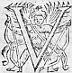
VOUS croyez que ma presence me sera utile, et je pense qu'aussi sera t'elle, mais par un moyen bien different de celuy que vous attendez, elle me profitera sans doute, en deux sortes, l'une en me sortant de la miserable vie où je suis, m'estant impossible de voir un tel changement en ma Dame, sans mourir.
Et l'autre, en me faisant prendre
vengeance de celuy qui est cause de mon mal. Jurant
par tous les Dieux que le sang de ce perfide est la
seule satisfaction que je puis recevoir d'une si
grande offence. Je seray pour ce subjet
sujet
vers vous dans le temps que ce porteur vous dira : cependant si
vous le trouvez à propos, faites voir à ma Dame la
lettre que je luy escrits, attendant que la fin de
ma vie, devancee de la mort de ce
meschant, luy rende tesmoignage, que je ne pouvois survivre
suivre
η
l'amitié qu'elle m'avoit promise, ny mourir
aussi sans en tirer vengeance.
Voicy, me dit-elle, continua Silvie, ce que j'ay tousjours le plus redouté, l'imprudence de Leonide, ou plustost sala malice est si grande qu'elle a declaré à Lindamor l'amitié que je porte à Celadon, et ce rapport est cause qu'il le veut tuer. J'aymerois mieux la mort, que si ce Berger avoit le moindre mal du monde à mon occasion, et il ne faut point douter que cest outrecuidé ne le fasse pour me desplaire, et Dieu sçait combien il le pourroit outrager facilementfacillement , puis que le pauvre Berger n'y pense point, et qu'outre cela il n'a point d'autre armes que sa houlette. Il faut bien dire, que c'est une grande malice que la sienne, de procurer la mort à celuy qui ne luy fit jamais desplaisir. Je croy que c'est lade rage, car elle l'ayme, et voyant qu'il n'a tenu compte d'elle elle voudroit qu'il fut mort. - Madame, luy respondis-je, je ne croy pas que ma
compagne ait fait cetteceste faute, mais plustost une plus grande : car lisant ce que Lindamor luy escrit, je ne pense pas qu'il vueille parler de Celadon, mais de Polemas : car à quelle occasion nommeroit-il Celadon perfideη ? - Et pourquoy, interrompit-elle incontinent, plustost Polemas ? - Parce Madame, luy dis je, qu'elle luy aura fait sçavoir l'artificeη dont il a usé de ce faux Druide. - Et quoy Silvie ? me dit-elle en se moquant de moy : vous croyez encores que Leonide vous aitayt dit vray ? ne cognoissez vous pas que ce fut une menterie qu'elle inventa pour me distraire de Celadon afin de le posseder toute seule ? Or je vous apprens si vous ne le sçavez, qu'elle en estoit tellement amoureuse, qu'elle ne pouvoit presque souffrir que je le regardasse : et si elle eust eu autant de puissance sur moy, que j'en ay sur elle, ô qu'ellequelle m'eust bien empeschee de n'entrer jamais en lieu où il eust esté ! Et quoy ? ma mie, vous n'avez point pris garde à ses actions, et comme lors qu'elle le voyoit, elle le mangeoit des yeux, s'il faut dire ainsi, ne le pouvant assez regarder : et s'ennuyoit tellement de nous voir aupres de luy qu'elle en mouroit de jalousie ? Je vous asseure que j'ay quelquefois passé mon temps à considerer les diverses passions qu'elle ressentoit. Je la voyois maintenant toute en feu, et puis incontinent devenir pasle, et sans couleur. Quelquefois il n'y avoit à parler que pour elle, et puis tout à coup elle se taisoit de sorte qu'il sembloit qu'on luy eust osté la voix, ou la langue. Je l'ay si souvent surprise qu'elle avoit les yeux sur luy,
qu'en fin je ne prenois plus la peine de la regarder : mais seulement me moquois d'elle quand je la voyois en cestecette extase, tel se peut nommer son ravissement. Et pensant de m'en retirer du tout, elle fit cestecette belle invention dont vous avez ouy parler, mais cela est aussi peu vray que la plus grande faucetéfausseté qui fut jamais. A ce mot elle prit l'autre lettre qui s'addressoit à elle, que vous pourrez lire, dict Silvie, la presentant à Leonide, qui la prenant trouva qu'elle estoit telle.
LETTRE
DE LINDAMOR A GALATHEE.
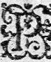
P
UIS que ce malheureux esloignement outre l'honneur de vostre presence, me ravit celuy de vos bonnes graces, Je proteste que je ne veux plus vivre que pour vous rendre preuve que je merite mieux ce que vous m'avez promis, que le perfide qui est cause de ma disgrace : que s'il faloit
falloit
obtenir le bien que je regrette par amour, ou par armes, et non par artifice, ne croyez point que ce meschant osast y aspirer tant que je serois en vie. Il advoüera bien tost ce que je dis, ou l'espee qu'il a desja ressentie, luy ostera à ce coup la vie, que je ne luy laissay que trop malheureusement, pour ce miserable et infortuné Lindamor.
Quand Leonide eust leu ceste lettre : - Je m'asseure, ditdict -elle, ma sœur, que Galathee a bien recognu que son tant aymé Celadon, n'estoit point en danger de perdre la vie par mon moyen, et que c'est plustost ce traitretraistre Polemas qui est cause de toute nostre peine : Et je prie Hesus qu'il le punisse par les armes, ou Taramis par le foudre, et qu'en fin par la grace de Tautates, Madame cognoisse que je n'ay point mentimenty quand je luy ay raconté la meschanceté de Climanthe, et de ce cauteleux amant : car tout ce que je luy en ay dit, est aussi veritable, que je desire le Guy de l'an neuf m'estre salutaire, et si je ments que je ne puisse jamais assister au sacrifice du pain et du vin, ny baiser la serpe d'or dont le Guy ceste année sera abbatuabatu : Bref ma sœur, je le vous jure par tous les serments qui nous sont plus saincts et sacrez : et quoy que je ne me soucie guiere de retourner à Marcilly, tant qu'elle sera de ceste humeur, si serois-je bien aise qu'à toutes les occasions qui se presenteront, vous fissiez tout ce qui se peut pour l'oster de l'erreur où elle est : non point pour autre subjet que pour ne luy laisser une si mauvaise impression de moy qui ne veux pas à la verité, vivre ny en DruideDruyde, ny en Vestale, mais ouy bien en fille de ma condition, et sans reproche. - Ma sœur, respondit Silvie : il ne faut point que vous m'asseuriez avec plus de serments de la finesse de Polemas, je l'ay creuë, dés la premiere fois que vous m'en parlastes, tant pour vous croire veritable, que pour ne douter point de l'esprit de Polemas, ny de sa volonté, par la cognoissance des choses
qu'il avoit desja faites pour ce subjet. Et devez croire qu'à toutes les occasions qui se presenteront je ne failliray point de persuader la verité à la Nimphe, comme jusques icy je n'en ay laissé passer une seulleseule , sans m'y estre essayé. Mais il ne faut point que je vous flatte flate en cela : je n'espere pas que mes paroles ny mes persuasions y puissent beaucoup faire, jusques à ce que son esprit n'y soit preparé d'autre sorte, ce qui peut estre adviendra trop tard si Dieu ne nous envoye quelque moyen inespéré : car je vois bien que Polemas a un mauvais dessein, et qu'il ne le couvre que pour la crainte qu'il a de Clidaman et de Lindamor, qu'il sçait estre armez, et tant aymezaimez du Roy Childeric ; qui ayant succedé à ce grand Merovee, a pris une si particuliere amitié à Clidaman, à Lindamor : mais plus encor à Guiemens qu'il ne peut estre sans eux. Et Polemas qui est fin et ruzé, craint que s'il entreprend quelque nouveauté, ce Franc ne les assiste, et par sa force ne ruine tous ses desseins. Mais pour laisser ces affaires d'estat qui doivent estre desmesleesη par de plus capables personnes que nous, je vous diray, ma sœur, que quand Galathee eust leu ce que Lindamor luy escrivoit, elle fut si aise de voir que Celadon ne couroit point de fortune, que la moitié de sa colerecholere fut passee. - Et bien, luy dis-je, Madame, n'ay-je pas bien deviné que Lindamor vouloit parler de Polemas ? - Vous avez raison, me dit-elle, et j'advoüe que j'ay à ce coup accusé à tort Leonide, mais la compassion que j'avois de ce pauvre Berger,
qui à la verité ne peut maispeut mets de tout cecy, me faisoit tenir ce langage. - Madame, continuay-je, faites moy l'honneur de croire que Leonide ne vous rendra jamais du desplaisir à son escient, et que cognoissant bien que vous n'aymezaimez nullement Polemas, elle a quelque raison de desirer que Lindamor parvienne à l'honneur qu'il recherche en vos bonnes graces pour le parentageη qui est entre elle et luy. Car vous sçavez, Madame, que Lindamor est de cest illustre sang de Lavieu, et elle de celuy de Feur, qui de si long temps ont eu tant d'alliances ensemble, qu'il semble que ces deux races ne sont qu'une. Et au contraire, il y a tousjours eu tant d'inimitié entre celle de Surieu, et celles-cy, que si elle tasche d'esloigner Polemas du bien qu'il pretend, vous devez l'en excuser, puis qu'elle y a un si grand interest. - Je sçavois bien, respondit Galathee, qu'il y avoit eu de grandes inimitiez entre ceux de Lavieu, et de Surieu, et depuis le combat de Lindamor et de Polemas, qu'il n'y avoit eu guiereguerre d'amitié entre eux, quoy que Polemas n'en ait rien sceu que par soupçonη . Mais je ne sçavois point le subjectsujet que Leonide avoit de favoriser Lindamor, et j'advouë qu'elle a raison, d'autant que chacunchascun doit desirer que le lieu dont il tire son origine soit le plus illustreη qu'il se peut. Et si je l'eusse sceu plustost, je n'eusse pas trouvé si mauvais la protectionprotestation η qu'elle a tousjours prise de Lindamor, soit contre celuy dont nous parlons, soit contre Celadon, qui à la verité a esté tant opiniastre quelquefois que j'ay eu
subjetsujet de croire qu'il y avoit de l'amour et non pas de la haine. Mais maintenant que je considere ce que vous dites, je veux croire qu'Adamas a fait eschapper Celadon, afin que Lindamor qui est son parent comme vous ditesdictes , par ce parvint à ce qu'il desire, et je pense bien que Leonide n'y a pas nuynuict pour ce mesme subject. ToutesfoisToutefois je le luy pardonne pour ceste consideration, et mesme n'ayant rien mandé à Lindamor de tout ce qui s'est passé en mon palais d'Isoure. Et faut que nous fassions, continua t'elle, une contreruze par son moyen, et sans qu'elle s'en doute. A ce mot Silvie se teust, et laissant son premier discours peu apres reprit de cestecette sorte : - Voyez-vous, ma sœur, je ne vous cache rien, parce que nostre amitié me le commande ainsi, mais si vous me descouvriez, je serois ruinee, c'est pourquoy je vous supplie de n'en faire jamais semblant. - J'aymerois mieux, respondit Leonide, ne parler jamais que si j'avois fait cestecette faute. - Sçachez donc, continua Silvie, que Galathee apres avoir quelque temps pensé en elle-mesme, me dit en fin : - Voyez vous Silvie. Je suis infiniment empeschee de ces deux hommes, je veux dire de Lindamor, et de Polemas, et faut que je vous advouë que celuy qui m'en defferoit, m'obligeroit infiniment : car je sçay bien, qu'ils ne laisseront jamais en paix Celadon aupres de moy, c'est pourquoy je voudrois bien essayer de me despescherdespecher de l'un par le moyen de l'autre, ce que nous pouvons faire par l'entremise de Leonide, à laquelle il faut que vous conseillez qu'elle doit advertir Lindamor de tout ce qu'elle ditdict de
Climanthe et de luyη , mais qu'elle se garde bien d'y embroüiller Celadon, et vous luy pourrez dire afin de luy en oster la volonté que je n'ay plus de memoire de luy, et que la presence de Lindamor qui est ChevalierChevallier de tant de merites, me fera bien oublier ce Berger entierement, parce qu'ou Lindamor me deffera de Polemas, ou cestui-cicestuy-cy de l'autre, et par ainsi j'en seray deschargee à moitié, et peut estre du tout, si ma fortune veut qu'en mesme temps l'un me defacedefface de l'autre. Je ne voudrois pas que ce fut par leur mort, mais plustost par quelque autre moyen, et toutesfois je me sens si fort importunee d'eux, et j'ayme de sorte Celadon, que s'il ne se peut autrement, j'y consentiray, pourveu que je n'y mette point la main, et que l'on ne sçache que cela vienne de moy. J'advoüe, ma sœur, qu'oyant ces paroles, je demeuray estonnee, et me resolus de vous en advertir, non pas pour vous donner volonté de faire ce qu'elle dict, mais au contraire pour y pourvoir. Je respondis donc à la Nymphe qu'avant que de faire dessein sur ce qu'elle disoit, il failloitfalloit sçavoir de Fleurial en quel temps Lindamor luy avoit dit qu'il viendroit. Ce qu'elle trouva à propos, et me commanda de l'appeller : ce que je fis, mais avant que de le faire parler à elle, je luy dis qu'il se gardastgardat bien de dire à Galathee le temps que Lindamor devoit venir, ny le lieu où il se devoit trouver, et que si elle le luy demandoitη , il distdit qu'il reviendroit beaucoup plus tard qu'il ne vous mandoit. Encor qu'il soit d'assez peu d'espritη , si est-ce
qu'il creut ce que je luy en dis, et lors qu'il fustfut devant elle, il mentoit si asseurement que Galathee le creut. Et parce qu'elle a trouvé à propos que je sois venuë vers vous, pour commencer de vous convier d'escrire à Lindamor, ou pour le moins de luy faire sçavoir ce que Polemas a fait contre luy : j'ay pensé qu'il estoit bon d'amener Fleurial pour vous dire plus au long ce que Lindamor vous mande, et qu'il ne m'a point voulu dire, mais il craint que vous soyez en colere contre luy, pour la faute qu'il a faite de donner ses lettres à Galathee, et de luy avoir dit le subjet de son voyage : si bien qu'il ne s'ose presenter devant vous. Il me semble qu'encor qu'il ait failly, il ne le faut pas toutesfois rudoyer de sorte qu'il perde la volonté de parachever : car devant qu'un autre en sceustsceut autant que luy, nous perdrions beaucoup de temps, et à l'avantureà l'aventure ne feroit-il pas mieux. - Vous avez raison, respondit Leonide, et peut-estre n'a-t'il pas fait tant de mal qu'il semble, puis que Galathee a leu la lettre de Lindamor, que sans doute elle eust faitfaict difficulté de voir, et que j'eusse esté bien empescheeempechee de luy presenter pour estre bannie de sa presence comme je suis. Vous le devez donc asseurer que je n'en suis point marrie, qu'au contraire, il a fort bien faictfait , mais qu'il n'y retourne plus, car peut estre une autre fois, il ne seroit pas à propos. Silvie sortant de la salle, fit appeller Fleurial, auquel elle fit entendre tout ce que vousη avez sceu, et puis le conduit vers Leonide qui luy fit un fort bon visage, et l'asseura de ce que sa compagne
luy avoit dict, et luy demandant particulierement le succez de son voyage, il commença de cestecette sorte :
- J'ay eu crainte d'avoir failly Madame, ainsi que vous
a peu dire Silvie
η
, que j'avois suppliee de vous
faire mes excuses, comme celle qui a veu en quelle
sorte le tout s'est passé : mais puis que Dieu mercy,
il est advenu autrement, j'en suis tres-aise, et m'en
resjouisresjouys comme du plus grand bien qui me puisse
arriver, ayant voüé tant de service à Lindamor, que
s'il recognoitreconnoit en moy quelque faute d'esprit, je
sçay bien pour le moins qu'il n'en trouvera jamais
de fidelité, ny d'affection. Cela fut cause qu'aussi-tost que vous me commandastescommandates de l'aller trouver,
je le fis avec toute la plus grande diligencedilligence qu'il
me fut possible, et arrivay en une ville qui
s'appelle Paris, où Merovee demeuroit pour lors,
estant de retourη
du pays des Neustriens : cestecette ville
est assise dans une Isle si petite que les murailles
sont continuellement lavees de la riviere qui
l'environne de tous costez, de sorte que l'on n'y
sçauroit aller que par des ponts. Aussi tost qu'il
me vistvit , je remarquay bien à son visage une grande
alteration : mais d'autant qu'il estoit au lict, et
qu'il y avoit quantité de personnes aupres de luy,
il ne peut parler à moy, ny me demander l'occasion de
mon voyage : mais lors qu'il fut seul, il me fit
appeller, et me demandant quel subject m'avoit amené,
je luy dis qu'il le verroit par vostre lettre : - Et
n'y en a-t'il point, dit-il incontinent, de celles
de madame ? - Vous sçaurez tout, luy respondis-je,
par cestecette lettre. Il changea
de couleur quand je luy tins ce langage, croyant bien qu'il y eust du changement : mais quand il eust leu ce que vous luy escriviez, je ne vis jamais un homme si estonné. Je ne sçay quant à moy ce qu'il y avoit dans ce papier, mais il faillit de luy oster la vie. - Je me ressouviendray bien, dit Leonide, des mesmes parolesparolles : car il en avoit fort peu, et veux, ma sœur, que vous les oyez, afin dit-elle, s'approchant de son oreille, que vous puissiez les dire à Galathee s'il est necessaire. Il n'y avoit que ce que je vous vay dire. Et lors se reculant, elle dit tout haut.
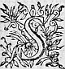
S
I autrefois vous avez deu esperer en moy, je vous dis maintenant que vous devez remettre toute vostre esperance en vous-mesme, non pas que j'aye diminué de bonne volonté envers vous, mais parce que les artifices de Polemas ont esté tels qu'ils m'ont osté tout pouvoir de vous servir. Vos affaires sont en si mauvais terme, qu'il n'y a point d'apparence de salut si vous ne revenez promptement. Je ne puis vous en dire d'avantage
davantage
que ce ne soit de bouche, n'estant pas à propos qu'autre que vous entende ce à quoy tout seul vous pouvez remedier.
- Vous luy donniez, dit Silvie, l'alarme bien chaude,
et ne m'estonne plus qu'il ait changé de couleur,
car cetteceste nouvelle estoit bien assez fascheuse pour
luy causer de semblables effects. - Que pouvois je,
dit Leonide, luy escrire moins ? n'estoit-il pas
vray ? Quant à moy je ne sçeus jamais mentirη
, mais
moins à mes amysamis : et à ceux qui se fient en moy qu'à
tous les autres. - Vos parolesparolles reprit alors Fleurial,
ne demeurerent pas sans effect. De fortune il n'y
avoit personne aupres de luy, comme je vous ay dit,
sinon un jeune homme qui le servoit en la chambre.
Il eut tant de puissance sur sa douleur qu'il retint
les plaintes jusques à ce qu'il eut commandé à ce
jeune homme, et à moy de nous retirer dans sa
garderobbe, attendant qu'il nous appellat : Et
faisant tirer le rideau, il se mit à souspirer si
haut que nous l'entendions quelquefois, encor que
la porte futfust fermee : Je m'enquis alors quel estoit le mal qui le retenoit
dans le lict, et je sceus que c'estoient des
blesseures qu'il avoit euës en une rencontre, où
les Neustriens avoient esté deffaictsdesfaits par la valeur
de Clidaman et de Lindamor : Et parce que j'estois
curieux de sçavoir comme le tout s'estoit passé,
prenant la parole il me
parla de ceste sorte.
- Je croy Fleurial, me
dit-il, (car il sçavoit mon nom m'ayant veu bien
souvent dans les jardins de Monbrison, et dans le
logis mesme de son maistre, lors que vous m'y
envoyez) que tu as ouy dire les batailles qui ont
esté gagnees sur les Neustriens par le Roy, avec
l'assistance toutefois de Clidaman et de mon maistre.
Je
m'asseure aussi que tu as ouy parler d'une dame
(il me la nomma bien, dit-il, s'addressant à
Leonide, mais j'en ay oubliéη
le nom)
qui
s'habillant en homme avoit suivy d'un pays qui est de là la mer un Neustrien qu'elle aymoit, et qui
ressembloit tant à Ligdamon, qu'estant pris pour
luy, il mourut ne voulant point espouser une femme,
pour qui celuy làη
s'estoit battu, et avoit tué un
homme, pour le meurtre duquel estant banny, il
s'enfuit en ce pays que je ne sçay nommer : et
depuis revenant fut pris par un parentparant du mort. Et
sans ceste Dame dont je te parle, il euteust esté remis entre
les mains de la Justice, mais elle combattitcombatit pour luy,
et se mit en prison pour l'en sortir.
Ce discours embroüillé de Fleurial, fit rire les Nimphes, encores que Silvie, pour la memoire de Ligdamon, en eust peu de volonté, et Leonide,
pour luy aiderayder luy dit : - Tu veux parler Fleurial,
de la belle Melandre. - Il est vray
(interrompit il) c'est ainsi qu'elle se nomme. - Et
de Lydias, continua la Nymphe, qui fut retenu à
Calais par Lypandas, à cause de la mort d'Aronte ? - Ce sont ceux-là mesme, dit Fleurial, en frappant
d'une main contre l'autre : mais je ne pouvois me
souvenir de leurs noms, et pourveu que vous m'aydiez
un peu, j'acheveray bien de vous raconter tout ce
qu'il me dictdit . Or ceste dame, continua-t'il, fut
cause que Calais fut pris par les Francs, et Lypandas (je ne sçay si je dis bien son nom) fut mis
prisonnier. Quant à Mellandre qui estoit dans un
cachot, aussitost qu'elle fut delivree
elle s'en
alla sans parler à Lydias, ayant opinion selon ce
qu'elle en avoit ouy dire, que Lygdamon qui estoit
entre les mains des ennemis fut Lydias, ainsi que
chacun luy disoitη
. Aussi tost que Lidias sçeut le
departdespart de ceste Dame, il se mit apres, sans redouter
la rigueur des ennemis, ny de la Justice ; Mais Lypandas qui estoit dans une prison, ayant sceu
qu'il avoit tenu une femme prisonniere, et qu'il
avoit combatu contre elle, devint tant amoureux de
Mellandre qu'il ne cessa de poursuivreη
sa delivrance,
jusques à ce qu'il fut mis en liberté, et soudain
print le chemin de la ville où elle estoit allee,
dont j'ay oublié le nom pour estre fort estrange.
- N'est-ce point Rothomage dit Leonide ? - c'est
celle-là
mesme dit Fleurial : O DieuDieux ,
que je vous
raconterois de belles choses, si j'avois une aussi
bonne memoire ! tant y a que le fils du Roy, ayant
eu quelque advertissement, s'en alla attendre les
ennemis, et les deffit apres un long combat, où
Lindamor fut blessé : de sorte qu'il ne pouvoit sortir
du lict. - Vrayement responditrespond
Leonide, tu es le
meilleur raconteur des choses que l'on t'a dictes
qui se puisse trouver en toute ceste contrée. Or
disdi -nous le reste, et si tu t'en acquitesacquittes aussi
bien, nous serons fort satisfaictes de ton bien dire.
- J'ay une memoire dit-il, qui ne me sert pas si
bien que je voudrois, et ayme mieux ne dire pas
plusieurs choses que de mentir.
Or cependant que ce jeune homme me racontoit ces
choses, Lindamor souspiroit et parloit quelquefois,
mais il m'estoit impossible d'ouyr ses paroles, parce
que la porte estoit
fermee, enfin j'ouys qu'il m'appella, et sans ouvrir les rideaux : il me dit : - Je veux Fleurial, que tu partes demain, et je te devancerois si je n'avois les deux cuisses percees qui m'empeschent de pouvoir souffrir le cheval, mais je te suivray bien-tost, et dis à Leonide que je m'en iray descendre chez Adamas, puisqu'elle m'a acquis son amitié, et que ce sera dans vingt nuictsη si pour le moins mes blesseuresblessures me le permettent, et à ce mot me commandant de m'aller reposer, je fus bien estonné que la nuict mesme on me dit que l'on l'avoit tenu deux ou trois fois pour mort, et que ses playes estoient tellement changees qu'il estoit en grand danger de sa vie : Je crois que les nouvelles que vous luy aviez escrites, en furent cause, tant y a qu'il fut longuement en cest estat, et ne peuspus partir d'une lune apresη , que s'estant consolé ou pris quelque resolution, son mal ne fut plus si dangereux. Outre les blessuresblesseures , il avoit eu une si fascheuse fiebvrefievre qu'il resvoit presque ordinairement, et nommoit à tous coups Galathée, Leonide, et Polemas, meslant parmy des propos d'amour, de vengeance et de mort. Il revint en fin en santé : mais encoreencor qu'il fut en cestcet estat, si ne pouvoit-il sortir du lict, et les Mires luy dirent que de quinze nuicts pour le moins il ne sçauroit sortir de la chambre : cela fut cause qu'il me despescha, et me dit que dans le dixiesmeη de la lune suivante, il seroit icy, et me donna les lettres que vous avez veuës, me commandant de vous dire beaucoup de belles paroles, qui n'estoient que des
remerciemensremerciements , et
desquels, je vous advouë, Madame, que j'ay perdu
entierement la memoire.
Les Nymphes ne peurentpurent s'empescher de rire, oyant
leles discours
de Fleurial, et les effets de sa bonne memoire : Et
parce qu'elles vouloient parler ensemble, elles luy
commanderent de sortir et d'entendreattendre
η
que Sylvie s'en
retournast, et sur tout qu'il se gardast bien de
dire à personne que Lindamor deust revenir : Et
estant demeurees seules, elles resolurent de dire
tout ouvertement à Galathee, la veritéη
de ce voyage,
esperant que peut-estre le merite de Lindamor la
feroit revenir à son devoir : mais de luy cacher en
toute façon le temps de son retour, de peur que si
elle le sçavoit, elle n'en donnat advis à Polemas,
non pas
pour amitié qu'elle luy portat : mais
seulement afin qu'il se tint sur ses gardes, et
qu'il fit une telle deffence que Lindamor le
voulant tuer, ils y demeurassent tous deux, ou bien
que luy disant le dessein et l'entreprise de
Lindamor, il demandat le camp, et qu'ils y
mourussent, dequoy les paroles de la Nymphe les
mettoient en soupçonη
. Ayant donc fait ce dessein Silvie fut d'advisavis de le
communiquer au sage Adamas, à finafin d'en sçavoir son
opinion : mais Leonide luy dit, qu'elle luy en
parleroit à loisir, et qu'à ceste heureà cette heure il estoit
empesché
avec sa fille. - Et ne la verray-je point ?
dit Silvie. - Il sera bien malaysémal-aisé , dit Leonide,
pour ce coup, car ils sont infiniment empeschez, à
cause qu'il n'y a plus qu'une lune, ou environ d'icy
au jour, que l'assembleeη
des Druydes se fait à
Dreux,
et je croy que pour ceste annee mon Oncle
s'en veut exempter à cause de sa fille, qu'il seroit contrainct de ramener, de la presence de laquelle il veut jouir le plus long temps qu'il luy sera possible. ToutefoisToutesfois si vous voulez, je ne laisseray pas de les en faire advertir, car je sçay qu'ils auront un tres-grand plaisir de vous voir. - Il ne faut pas, dit Silvie, je suis bien ayseaise qu'Adamas se resolve de demeurer ceste annee, car sa presence nous sera peut estre plus necessaire que nous ne pensons : Il ne faut point les destourner, et me suffit de sçavoir qu'ils se portent bien, et apres quelques autres discours Silvie pritprint congé, et se retira à Marcilly, où Galathée l'attendoit en bonne devotion, pour le desir qu'elle avoit d'entendre leles discoursη que Leonide et elle avoient tenus, et sur tout pour apprendre des nouvelles de Celadon, s'asseurant bien que Leonide en auroit : Mais quand elle sçeust que le Berger n'estoit point en son hameau, et que personne ne sçavoit où il estoit, elle demeura fort empeschee, ne sçachant dequoy accuser Leonide, car elle pensoit bien que si le berger se fut sauvé par son advis, elle n'eust pas permis qu'il fut sorty hors de la contree : Et apres avoir quelque temps songé en elle-mesme, elle dit : - Peut-estre en fin sera-t'il vray que Leonide n'est point coulpable du départdespart de Celadon, puis qu'il s'en est allé de ceste sorte ? - Je croy veritablement respondit Silvie, qu'elle n'a jamais pensé à le η faire sortir du Palais d'Isoure, et selon que je luy en ay ouy parler, je respondrois en cela presqueη autant pour elle que pour moy. - Mais si ce n'est point elle reprint Galathee,
pourquoy n'estη -elle pas voulu revenir quand vous le η luy avez mandé de ma part ? - Madame, dit Silvie, me permettrez-vous de vous dire franchement la responce qu'elle m'a faictefaite ? - Je ne le vous permets pas seulement adjousta la NympheNimphe, mais je le vous commande. - Sçachez donc Madame, continua Silvie, qu'apres avoir veu ma lettreη elle me respondit, Qu'elle recognoissoit bien l'honneur que ce luy estoit de vous faire service, et plus encores d'estre prés de vostre personne, n'ignorant pas que nous sommes toutes obligées par la nature et par vos merites, à vous donner, et nostre peine, et nostre vie, mais quand elle consideroit les estranges opinions que vous aviez conceuës contre elle, et le mauvais traittement que pour ces opinions elle avoit receu de vous, elle aymoit mieux s'esloigner de vostre presence, que d'estre en danger de recevoir encor un mauvais visage, et un congé avec si peu de subject. Qu'en ceste resolution elle se forçoit infiniementinfiniment , et l'inclination qu'elle avoit d'estre tousjours aupres de vostre personne, mais qu'elle aimoit mieux supporter cetteceste peine en particulier, que d'estre la fable de toute la cour : Qu'une fille n'avoit rien de si cher que la reputation, et que les soupçons que vous aviez d'elle depuis quelques lunes, l'offençoient de sorte qu'elle donnoit à parler à chacun à son desavantagedesadvantage . Qu'elle rechercheroit tousjours l'honneur de vos bonnes graces par tous les services qu'elle vous pourroit rendre, mais elle vous supplioit tres
humblement de trouver bon qu'elle ne revint plus, et à ceste fois que je luy en ay parlé, elle m'a fait encores la mesme responce, et a adjousté tant de sermentssermens que ce qu'elle vous avoit dit de Polemas et de Climante, estoit veritable, qu'il faut que j'advoüe que j'en crois quelque chose. - Pensez-vous dit Galathée, que cela puisse estre ? - Madame, respondit Silvie, je n'y voy rien d'impossible, car il est bien certain que Polemas vous ayme, et qu'il a bien assez de finesse pour inventer cet artifice, et ce qui me le fait mieux croire, c'est que le jour que vous trouvastes Celadon, Polemas fut veu tout seul au mesme lieu, s'y promenant fort long temps, et monstrant bien qu'il y avoit quelque dessein : - Et comment le sçavez-vous ? dictdit la Nimphe : - Je l'ay appris, dit Silvie, de plusieurs personnes, parce que depuis que ma compagne m'eut raconté ce qu'elle vous en η avoit dit, et voyant la doubte en quoy vous en estiez, je fus curieuse d'en descouvrir la verité, et m'enquerant en quel lieu estoit Polemas ce jour-là, je sçeus au commencement qu'il n'estoit point à Marcilly : Et depuis recherchant la verité de plus prés, je descouvrydescouvris qu'il estoit party de Feurs, n'ayant qu'un homme en sa compagnie que personne ne cognoissoit, auquel il faisoit des caresses extraordinaires : Et en fin j'ay sceu de plusieurs, que ceux qui cherchoientrecherchoient Celadon, le long de Lignon, trouverentη Polemas tout seul, qui se promenoit au mesme lieu où vous trouvastes le Berger. - Vrayement dit Galathee, ce que vous
me racontez me met bien en
peine, et s'il est vray, il ne faut point douter que
j'ay eu tort de traicter Leonide comme j'ay fait,
car j'ay pensé jusques icy que c'estoit une pure
menterie. - Madame, respondit Silvie, je vous
asseureray bien que c'est la verité que Polemas fut
long temps sur le lieu, et que depuis on l'y a veu
plusieurs jours suivans sans compagnie, jugez ce
qu'il y pouvoit attendre ! - Il faut advoüer, dit Galathee, que veritablement Polemas est meschant
et que si j'en puis descouvrir la verité, je l'en
feray bien repentir : cependant je veux que vous disposiez
Leonide à revenir, et que vous l'asseuriez
que je l'aymerayaimeray pourveu qu'elle vive, et avec moy,
et avec vous comme elle doit.
D'autre costé Leonide, aussi tost que sa compagne
fut partie, retourna vers Adamas, et luy raconta une
partie des nouvelles qu'elleη
luy avoit dittesdites , cachant
avec finesse ce qu'elle creut qu'il pourroit trouver
mauvais, et parce qu'il estoit heure de disner : le
Druyde, Alexis, et elle se retirerent au petit pas dans le logis.